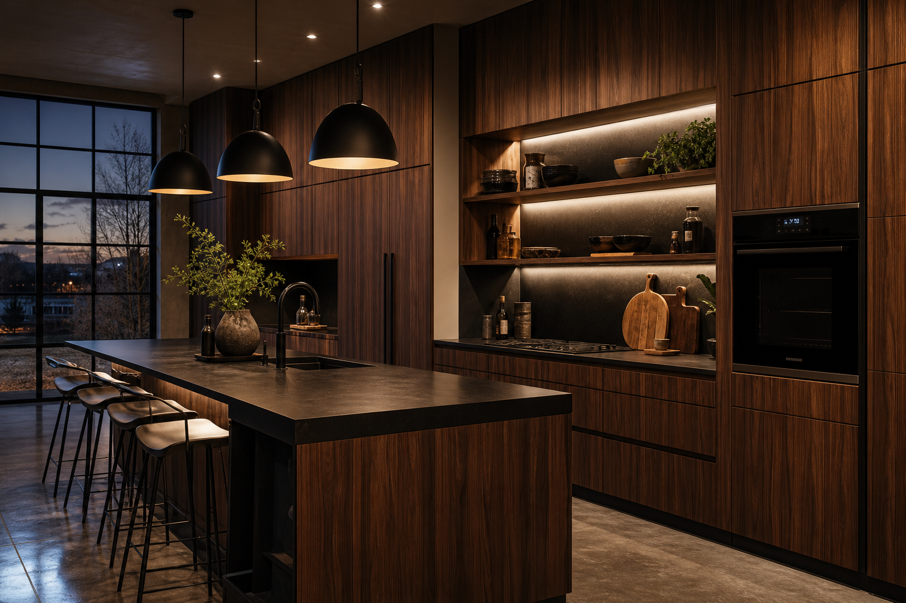

Dark Wood Kitchen Cabinets With Concrete Floors: Remodel Ideas
Dark wood cabinetry with a concrete floor is a strong pairing for homeowners who want industrial edge without losing warmth. The winning versions lean on lighting, texture, and honest material contrast—not clutter. Line up a kitchen remodel specialist for casework and a concrete coating pro for the slab so schedules do not fight.
Wood tones and cabinet details
Vertical grain and handleless or integrated pulls read modern. If you prefer hardware, keep it quiet so the wood remains the hero. Ask how wood species and stain will age next to UV from large windows.
Dark stains show dust and scratches faster than mid-tones—plan cleaning tools that will not abrade the finish.
Concrete finish options in kitchens
Polished concrete reflects light beautifully but needs a maintenance plan. Confirm how spills, chair movement, and pet traffic should be handled, and whether a matte sealer suits your gloss preference—your floor coating contractor should put that in writing.
If the slab is existing, expect honest talk about cracks, previous adhesives, and levelness. Wood cabinetry installs tolerate less floor variance than you might think—low spots show up as shimming headaches.
Countertops and backsplashes
Dark matte stone on the island can anchor the room while perimeter counters stay slightly lighter for contrast—or vice versa. The key is limiting competing patterns so wood and concrete do not feel chaotic.
Full-height stone behind the range can feel luxe with dark cabinets; just coordinate hood depth and outlet placement before fabrication.
Comfort, slip resistance, and acoustics
Hard surfaces bounce sound. Layer in textiles where practical, and discuss slip resistance at transitions from exterior doors or when floors are wet.
Rugs with low-profile pads stay safer in trip zones. Choose fibers you can clean—kitchens are spill factories.
Industrial windows, trim, and sightlines
Steel-look or black mullion windows pair naturally with wood and concrete. Budget for efficient glazing so style does not cost comfort.
Trim color at windows should relate to either cabinet stain or wall paint—floating trim in a third unrelated white rarely helps.
Open shelving versus upper cabinets
Open shelves keep the wood story visible but demand discipline. If you are not a minimalist, glass-front uppers can give storage without a full wall of solid doors.
Task light shelves generously—dark dishes on dark wood in shadow disappear visually.
Coordinating kitchen and floor trades
Sequence matters: protect fresh concrete sealer from cabinet install scuffs, or finish floors after major cabinet cutting if your kitchen contractor recommends it.
Discuss shoe policies during trim-out. One muddy boot can spoil a mood board kitchen.
FAQ
Are concrete floors cold in a kitchen?
They can be; radiant heat, rugs, and thoughtful shoe-off habits help.
Will dark wood cabinets make the kitchen feel smaller?
Not if lighting and layout keep sightlines open and surfaces balanced.
Is polished concrete too slippery for kitchens?
Seal chemistry and finish level determine slip resistance. Discuss additives or honed options if you worry about wet shoes from outside.
Can I heat a concrete kitchen floor?
Often yes with hydronic or electric systems—plan early with structural and cabinet layouts so you do not nail through loops.